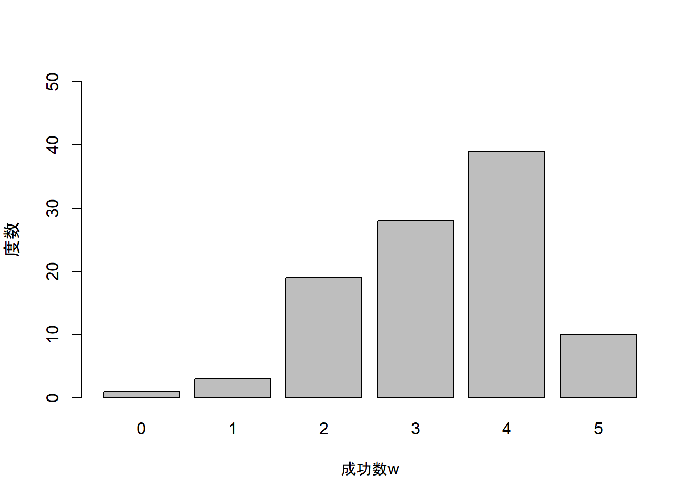

4.1.1 比率の標本分布(p.93-97)
- 教科書(4.2)式であらわされる確率分布は2項分布でした。
- 2項分布は一般的には「成功確率が\(\pi\)の試行を独立に\(N\)回繰り返したときの成功数\(w\)の確率を与える分布」です。
- 教科書95ページにある例をもとにRで確率の計算を行ってみましょう。
手順1
- 教科書95ページでは\(N = 5\)，\(\pi = .6\)としたときのサンプルにおける正答者数が\(0, 1, 2, 3 ,4, 5\)の各値をとる確率を計算しています。
- \(N\), \(\pi\), \(w\)の値をそれぞれ
N,PI,wというオブジェクトに代入します。 wには，まず正答者数が0の時の値を計算できるように数字の0を代入してください。
手順2
- 次に(4.2)式をコードで記述します。
- (4.2)式はこのような数式でした。
\[ \begin{align} f(w) &= {}_N C _w \pi ^{w}(1 - \pi) ^{N - w}\\ &= \frac{N!}{w!(N - w)!} \pi ^{w}(1 - \pi) ^{N - w}\tag{4.2} \end{align} \]
(4.2)式には「!(階乗)」があります。Rでは階乗の計算はgamma(N + 1)で行うことができます。
- 例えば3の階乗(\(3!\))は
3 * 2 * 1で6です。
- コンソール画面に
gamma(3 + 1)と直接入力すると同様に6と計算できるはずです。確認してみてください。 - (4.2)式をコードで記述すると以下のようになります。
## [1] 0.01024- 実行すると0.01024という結果が表示されます。
- これは正答者数が0(
w= 0)のときの確率です。
- 教科書でも\(f(0) = .4 ^5 = .01024\)と同じ値が計算されていることがわかります。
手順3
wに0から5の値を代入して，一度に確率が計算できるようにします。
- Rでは複数の値を1つのベクトルとしてまとめることができます。ベクトルを作成するには
c()関数を用います。
wの中身を確認すると，0から5の値が代入されていることが確認できます。
## [1] 0 1 2 3 4 5- 上記のコードを実行したら，以下の(4.2)式のコードを再度実行してください。それぞれの正答者数に対応した確率が計算されます。
## [1] 0.01024 0.07680 0.23040 0.34560 0.25920 0.07776- \(0.01024\)は正答者数が0(\(f(0)\))の時，\(0.07680\)は正答者数が1(\(f(1)\))の時にそれぞれ対応します。
手順4
- 最後に計算した確率を図で表現してみましょう。
- 図で表すため，(4.2)式のコードを
xというオブジェクトに代入します。
- 図4-3のような棒グラフを描くには，
barplot()関数を使います。
- 引数のうち，
ylabはy軸のラベル，mainは図のタイトル，names.argは各バーの名前を設定しています。
- Macだとプロットするときに日本語が文字化けすることがあります。その時は，
par(family= "HiraKakuProN-W3")というコードを入力し実行してから，再度barplot()関数を実行してください。
x <- gamma(N + 1) / (gamma(w + 1) * gamma(N - w + 1)) * PI ^w * (1 - PI) ^(N - w)
barplot(x, ylab = "確率", main = "正答者wおよび比率pの標本分布",
names.arg = c(0,1,2,3,4,5))